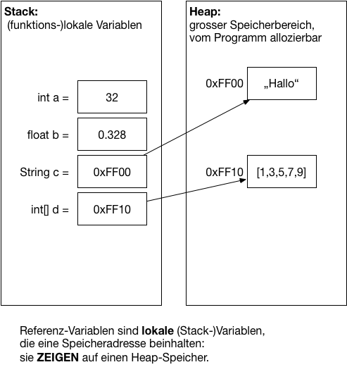
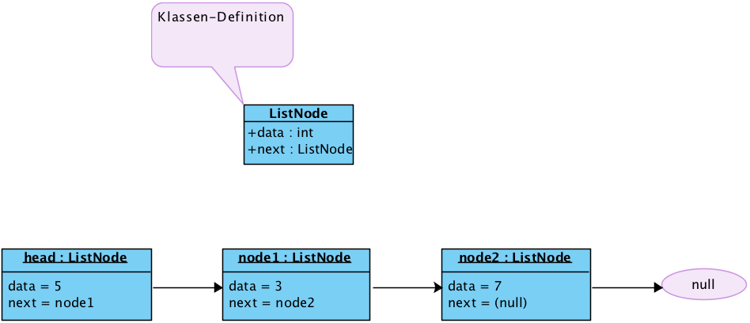
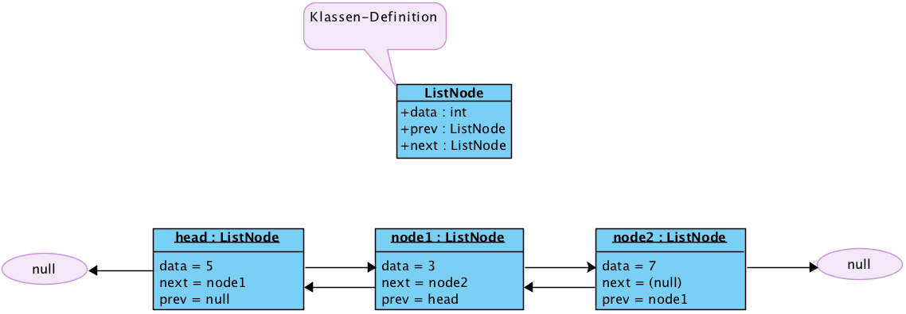

{% extends "../_base_template.html" %}
{% block title %}Lektion 3 - Linked Lists{% endblock %}

{% block sections %}
<section data-markdown >
<textarea data-template>
<i class="fas fa-graduation-cap"></i> Lektion 3 - Grundlagen Linked Lists
=============================

Ziel der Lektion:

* Sie können Klassen als komplexe Datenstrukturen in Java nutzen
* Sie wissen, was Referenzvariablen sind und wie diese mit Objekten im Speicher zusammenhängen
* Sie verstehen den Aufbau einer Linked List
* Sie können eine Linked List in Java selber programmieren

</textarea>
</section>

<section>
<section data-markdown >
<textarea data-template>
<i class="fas fa-graduation-cap"></i> komplexe Datentypen - zur Erinnerung
=============================

Wir repetieren kurz:

* Komplexe Datentypen in Java bilden wir mit Klassen ab.
* Klassen sind "Baupläne" für spätere Objekt-Instanzen
* Klassen bestehen aus **Attributen** und **Methoden**

<i class="far fa-hand-point-right"></i> Mehr dazu im Modul von Herrn Inauen.

</textarea>
</section>

<section data-markdown >
<textarea data-template>
<i class="fas fa-graduation-cap"></i> komplexe Datentypen - zur Erinnerung
=============================

Ein Beispiel eines komplexen Datentyps mit Klassen:

```java
class Noten {
    public String schueler;
    public float[] noten = new float[10];
    public float summe() {
        float s = 0;
        for(int i = 0; i < this.noten.length; i++) {
            s = s + this.noten[i];
        }
        return s;
    }
}

// Instanzieren eines Objektes: vom "Bauplan" Klasse wird ein Objekt "gebaut":
Noten n = new Noten();
// Attribute zuweisen / verändern:
n.schueler = "Alexander";
n.noten[0] = 5;
n.noten[2] = 4;

// Methoden anwenden:
float schnitt = n.summe() / n.noten.length;
```
</textarea>
</section>

<section data-markdown >
<textarea data-template>
<i class="fas fa-graduation-cap"></i> Repetition Referenzen in Java
=============================

**Zur Erinnerung:**

Komplexe Datentypen / Objekte werden im Heap abgelegt, und man erhält eine **Referenzvariable** (einfach gesagt: ein Pointer)
auf dem Stack:



Beispiel:
```java
// n1 ist die Referenzvariable auf dem Stack auf ein Objekt im Heap vom Typ "Noten":
Noten n1 = new Noten();
n1.schueler = "Alexander";

// n2 kriegt die Referenz zugewiesen, zeigt somit auf dasselbe Objekt:
Noten n2 = n1;
n2.schueler = "Thomas";

System.out.println(n1.schueler); // Ausgabe?
System.out.println(n2.schueler); // Ausgabe?
```
</textarea>
</section>
</section>


<section>
<section data-markdown >
<textarea data-template>
<i class="fas fa-graduation-cap"></i> Grundlagen Listen
=============================

**Folgendes gilt es festzuhalten:**

Arrays sind:

* mühsam, wenn man nicht genau weiss, wieviele Elemente zu speichern sind
* mühsam, wenn man einzelne Elemente einfügen oder entfernen muss
* super, wenn man auf Elemente zugreifen muss (nach Index)

</textarea>
</section>

<section data-markdown >
<textarea data-template>
<i class="fas fa-graduation-cap"></i> Grundlagen Listen
=============================

**Folgendes gilt es festzuhalten:**

Arrays sind:

* mühsam, wenn man nicht genau weiss, wieviele Elemente zu speichern sind
* mühsam, wenn man einzelne Elemente einfügen oder entfernen muss
* super, wenn man auf Elemente zugreifen muss (nach Index)

Listen sind:

* super, wenn man nicht genau weiss, wieviele Elemente zu speichern sind
* super, wenn man einzelne Elemente einfügen oder entfernen muss
* mühsam, wenn man auf Elemente zugreifen muss (nach Index)

**Definition Liste:**

> <i class="far fa-hand-point-right"></i> Eine verkettete Liste ist eine Datenstruktur, die eine unbestimme Anzahl von
(komplexen) Datentypen enthält. Dieser Datentyp dient der Speicherung von Daten.
Die aus diesen Datentypen erzeugten Datenstrukturen werden "Knoten" oder **Nodes** genannt. Die einzelnen Knoten der Liste sind
dabei durch Referenzen (resp. Pointer) verbunden.

<i class="far fa-hand-point-right"></i> Wir schauen uns dies mit LEGO<sup>&reg;</sup>-Steinen an:
* Aufbau
* Methoden (was können wir mit einer Liste MACHEN?)
</textarea>
</section>
</section>


<section>
<section data-markdown >
<textarea data-template>
<i class="fas fa-graduation-cap"></i> Einfach verkettete Liste - Grafisch
=============================

Wie gesehen bestehen Listen aus einzelnen **List Nodes**, welche miteinander über Referenz-Pointer verbunden sind:




</textarea>
</section>

<section data-markdown >
<textarea data-template>
<i class="fas fa-graduation-cap"></i> Einfach verkettete Liste - Code
=============================

Wir definieren eine `ListNode`-Klasse als komplexen Datentyp:


```java
class ListNode {
    // "Wert" der Node: das kann auch ein beliebig anderer Datentyp / komplexer Typ sein:
    public int data;

    // Referenz / Zeiger auf die nächste Node:
    public ListNode next;
}
```

</textarea>
</section>

<section data-markdown >
<textarea data-template>
<i class="fas fa-graduation-cap"></i> Doppelt verkettete Liste - Grafisch
=============================

Doppelt verkettete Listen kennen ihre "Nachbarn" in beide Richtungen:



</textarea>
</section>

<section data-markdown >
<textarea data-template>
<i class="fas fa-graduation-cap"></i> Doppelt verkettete Liste - Code
=============================

Wir definieren eine doppelt verlinkte `ListNode`-Klasse als komplexen Datentyp:


```java
class ListNode {
    // "Wert" der Node: das kann auch ein beliebig anderer Datentyp / komplexer Typ sein:
    public int data;

    // Referenz / Zeiger auf die vorherige / nächste Node:
    public ListNode next;
    public ListNode prev;
}
```

</textarea>
</section>
</section>


<section>
<section data-markdown >
<textarea data-template>
<i class="fas fa-graduation-cap"></i> Aufbau / Methoden
=============================

Vergleich mit "Menschenkette":


* Ist das nicht auch einfach eine "Datenstruktur" (aus Menschen)?
* Was passiert, wenn eine neue Person an einer bestimmten Stelle "eingefügt" wird?
* Was passiert, wenn eine Person aus der Reihe entfernt wird?

<i class="far fa-hand-point-right"></i> Wir haben also ein paar Anforderungen, was wir mit der Liste machen können müssen.

</textarea>
</section>

<section data-markdown >
<textarea data-template>
<i class="fas fa-graduation-cap"></i> Aufbau / Methoden
=============================

** Funktionen**

Folgende Anforderungen haben wir:

* Liste erstellen
* Element (Node) anhängen
* Element (Node) einfügen
* Element (Node) verschieben
* Element (Node) entfernen
* Liste ausgeben / durchlaufen

... ergibt:

* die Datenstruktur **`List`** definieren: Sie repräsentiert die Liste als Ganzes
* **`appendNode()`** dient zum Anhängen einer Node
* **`insertNode()`** dient zum Einfügen einer Node
* **`moveNode()`** dient zum Verschieben einer Node
* **`removeNode()`** dient zum Entfernen einer Node
* **`printList()`** dient zum Ausgeben  der Liste

</textarea>
</section>

<section data-markdown >
<textarea data-template>
<i class="fas fa-graduation-cap"></i> Aufbau / Methoden: List-Klasse
=============================

Wir definieren also unsere `List`-Klasse, welche:
* unsere Liste als Ganzes repräsentiert
* Methoden zum Bearbeiten der Liste zur Verfügung stellt:


```java
public class LinkedList {
	// Eine Referenz / Pointer auf die erste Node unserer Liste
	public ListNode head;

	public ListNode appendNode(int data) {
		// Instanzierung der neuen Node, noch "freischwebend":
		ListNode newNode = new ListNode();

		// Daten auf Node speichern:
		newNode.data = data;

		// Anhängen heisst: am Schluss der Liste anfügen. Wir suchen also
		// den "Schwanz" der Liste:
		ListNode last = head;
		while( last != null && last.next != null ) {
			last = last.next;
		}

		// Haben wir die letzte Node? dann hängen wir uns an:
		if (last != null) {
			last.next = newNode;
			newNode.prev = last;
		} else {
			// Ha! Unsere neue Node ist die Erste!
			this.head = newNode;
			newNode.prev = null;
		}

		// next auf unserer neuen Node ist sicher null:
		newNode.next = null;

		return newNode;
	}

    // ....
}
```
</textarea>
</section>

<section data-markdown >
<textarea data-template>
<i class="fas fa-graduation-cap"></i> Aufbau / Methoden: List-Klasse
=============================

Die weiteren Funktionen programmieren und testen Sie selber (Hausaufgabe)

Ich schlage folgende Reihenfolge vor:

* die **`ListNode`**-Klasse muss implementiert werden.
* **`appendNode()`** fertig: Bringen Sie das Programm zum Laufen
* **`printList()`**
* **`insertNode()`**
* **`removeNode()`**
* **`moveNode()`** als Kombination von den vorhergehenden Methoden.


<i class="far fa-hand-point-right"></i> Sie finden das Grundgerüst für `List` auf Moodle.


</textarea>
</section>
</section>
{% endblock %}
